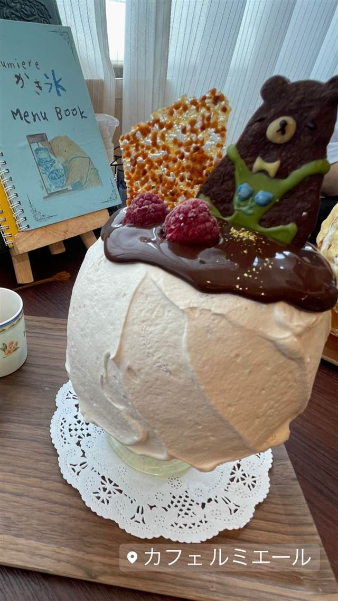
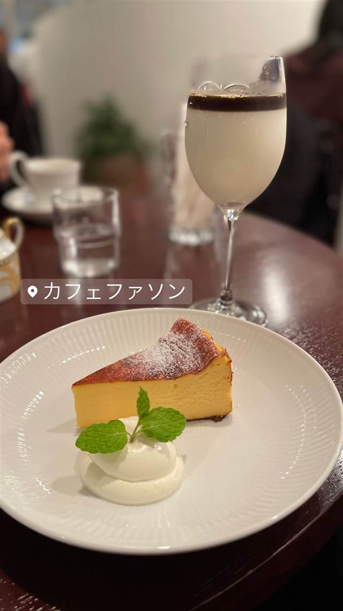
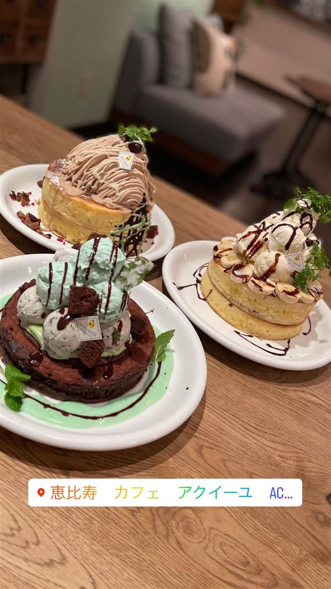
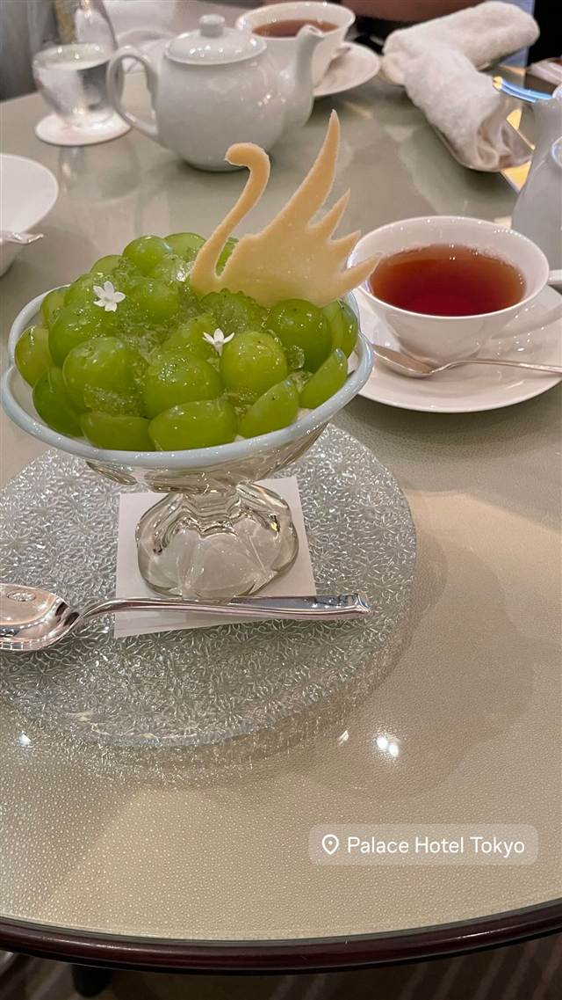
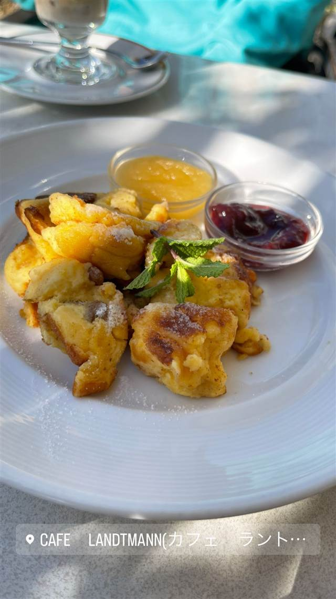
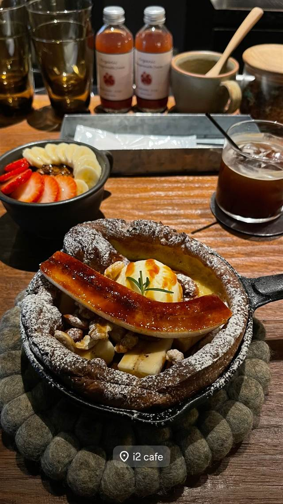

カフェ ルミエール（Cafe Lumiere）
目の前でフランベして仕上げる物語性ある焼き氷
カフェルミエール
吉祥寺の隠れ家的カフェで、目の前でフランベして仕上げる「焼き氷」など物語性のあるかき氷が名物。元はコーヒー自慢のレトロな喫茶店だったが、スタッフのアイデアを取り入れる中で今の個性的なスタイルへと変化した。
TRIVIA
豆知識
- 元々はコーヒーが自慢のレトロな喫茶店で、スタッフのアイデアから今の物語性あるかき氷店に変化した
- 店名「ルミエール」は開業を支えてくれた人々への“光”でありたいという思いから名付けられた
REVIEWS
世間の評判
3.57食べログ
炎の演出をする焼きかき氷の話題性
- 炎で炙る演出のかき氷を評価し話題にする声が多い
- 隠れ家的でレトロな落ち着いた雰囲気を挙げる人が多い
- 人気が高く予約が必須だという声がある
- 混雑時は接客やかき氷が溶けるのが早いと感じる人もいる
食べログ 口コミ518件
| 看板 | 目の前でフランベする「焼き氷」などのかき氷 |
|---|---|
| こだわり | メレンゲに包んだかき氷を目の前で燃やして仕上げる演出性の高いスタイル。 |
| どこから | 23区の外れ・近郊 |
| 行くなら | 予約必須 |
| 予算 | 昼 ¥1,000～¥1,999 夜 ¥3,000～¥3,999 |
| 場所 | 吉祥寺 東京都武蔵野市吉祥寺本町（東山ビル4F） |
| メモ | 吉祥寺駅から徒歩1分、東山ビル4階の隠れ家的立地。予約が望ましい人気店。 |
食べたもの：かき氷
NEARBY
近い店・同じ系統の店
-

カフェ 中目黒 カフェ ファソン 中目黒本店（CAFÉ FAÇON） コーヒーとの相性を考え抜いたバスクチーズケーキ 昼 ¥1,000～¥1,999 夜 ¥1,000～¥1,999 -
 カフェ 二子玉川駅
カフェ リゼッタ 二子玉川店（Cafe Lisette）
食べログ「カフェ百名店」に2年連続選ばれたプリンアラモード
昼 ¥1,000～¥1,999 夜 ¥1,000～¥1,999
カフェ 二子玉川駅
カフェ リゼッタ 二子玉川店（Cafe Lisette）
食べログ「カフェ百名店」に2年連続選ばれたプリンアラモード
昼 ¥1,000～¥1,999 夜 ¥1,000～¥1,999
-

カフェ 恵比寿・代官山 カフェ アクイーユ 恵比寿店 全国パンケーキ人気店ランキングで1位に輝いたパティシエ仕込みの一枚 昼 ¥1,000～¥1,999 夜 ¥2,000～¥2,999 -

カフェ 大手町駅 ザ パレス ラウンジ(The Palace Lounge) 輪島塗の名工赤木明登の漆器で提供する皇居のお濠を望むアフタヌーンティー 昼 ¥3,000～¥3,999 夜 ¥3,000～¥3,999 -

カフェ 表参道 カフェラントマン 青山店（CAFE LANDTMANN） ウィーン本店と同じレシピで作る本格ザッハトルテ 昼 ¥1,000～¥1,999 夜 ¥3,000～¥3,999 -

カフェ 表参道駅 i2 cafe (アイツーカフェ) フルーツサンド店の姉妹店が出す、オーブン焼きのダッチベイビー 昼 ¥2,000～¥2,999 夜 ¥2,000～¥2,999